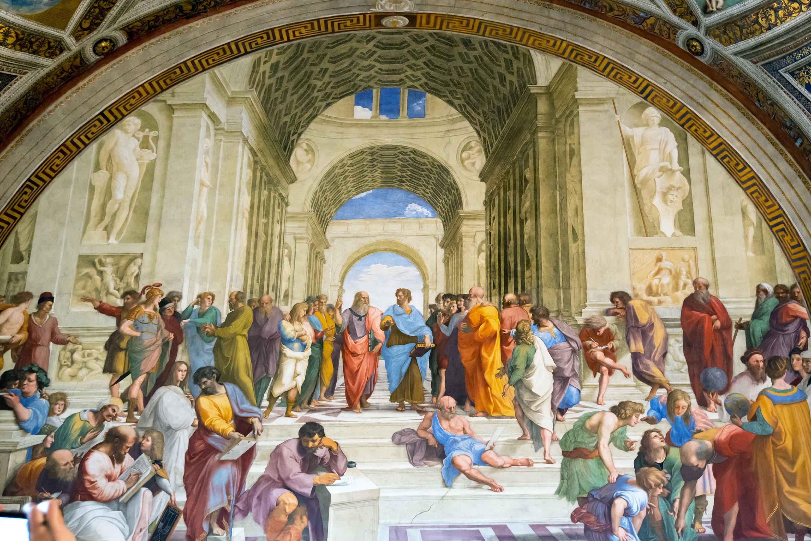
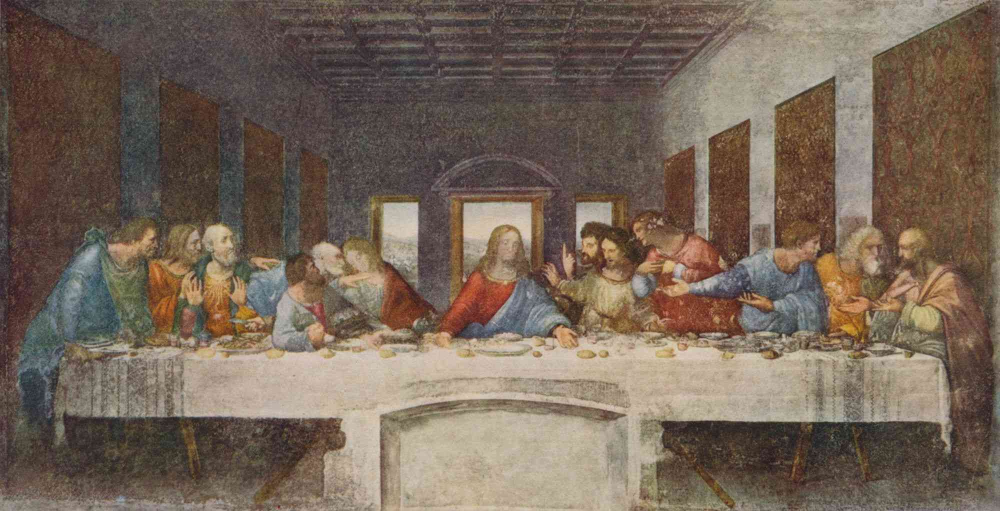
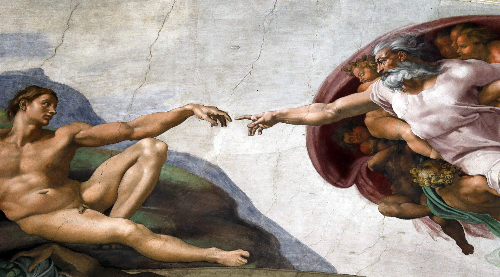

The Renaissance is a period in European history marking the transition from the Middle Ages to modernity and covering the 15th and 16th centuries, characterized by an effort to revive and surpass ideas and achievements of classical antiquity.
  
This site was created to show learners what Renaissance was and introduce three well-known painting masters,Raphael,Leonardo Da Vinci and Michelangelo, as well as their representative paintings.
Created by Hua Xu